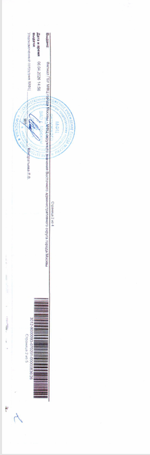
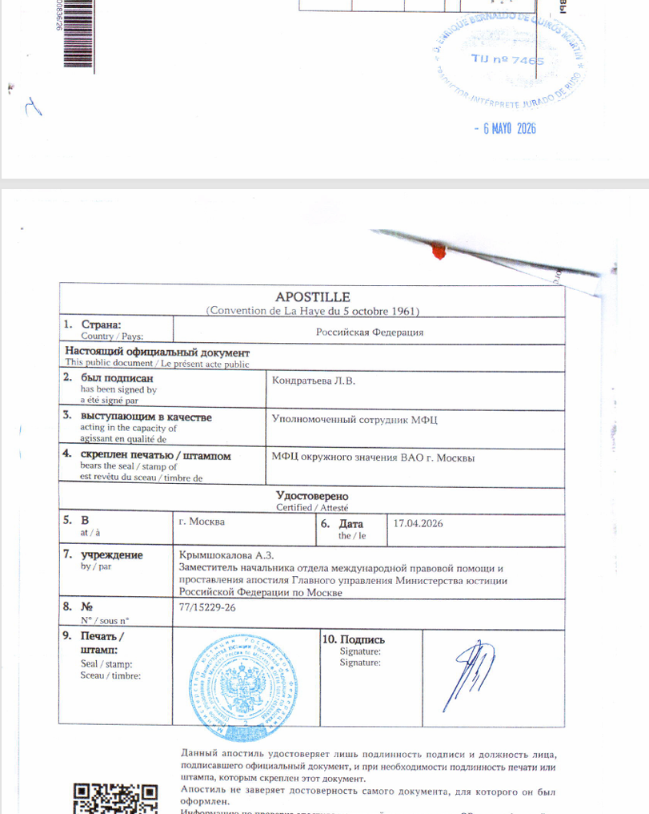
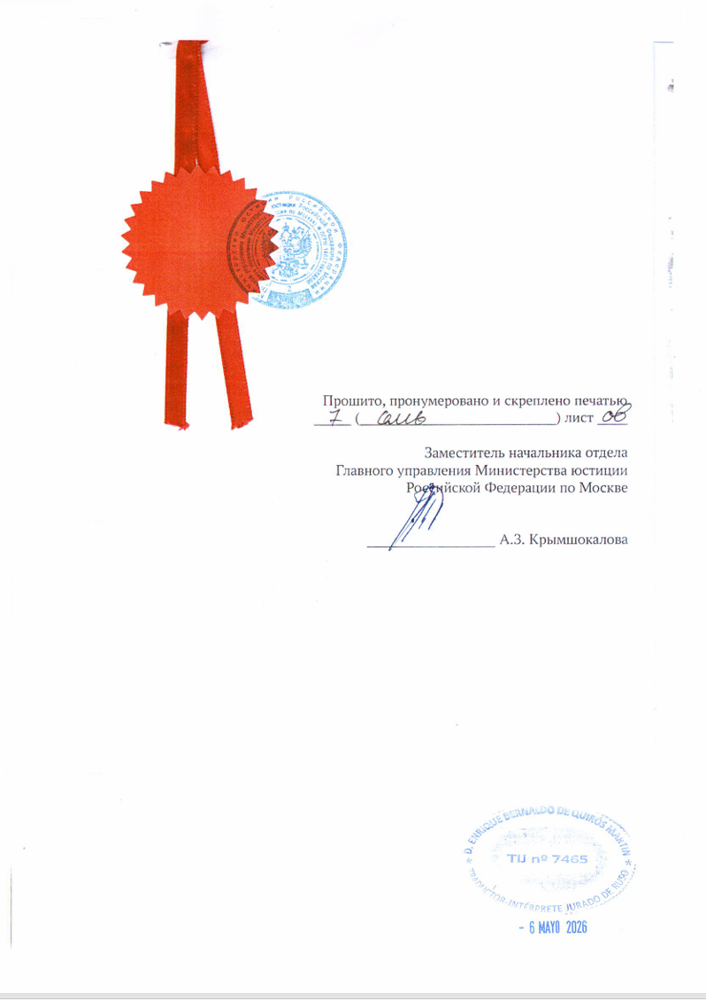

Документы
Выписка из электронной трудовой книжки
Как получить бумажную СТД-СФР, поставить апостиль и подготовить документ к присяжному переводу.
Главное
Для подачи по Digital Nomad нужна бумажная выписка СТД-СФР с апостилем и присяжным переводом. PDF с Госуслуг используйте только для проверки данных.
Что такое СТД-СФР
СТД-СФР - это сведения о трудовой деятельности из Социального фонда России. Это не электронная PDF-выписка и не простая распечатка. Для апостиля нужен бумажный официальный документ с подписью и печатью.
Где получать
Идите во флагманский МФЦ или в другой МФЦ, где могут выдать бумажную СТД-СФР, оформить ее с подписью, печатью, прошивкой и нумерацией, а затем принять этот же документ на апостиль.
Это основной маршрут: в одном месте получаете выписку и сразу сдаете ее на апостилирование.
Мне нужна бумажная выписка СТД-СФР для апостиля. Документ нужен с подписью, печатью, прошивкой и нумерацией страниц. После выдачи хочу сразу подать его на апостиль.
Если МФЦ не выдает бумажную СТД-СФР или не может оформить ее нормально, идите в территориальное отделение СФР. Там получите бумажную СТД-СФР с подписью, печатью, прошивкой и нумерацией, а потом отдельно подайте ее на апостиль через МФЦ или напрямую в Минюст.
Если сотрудник предлагает электронную выписку, отвечайте:
Мне не нужна электронная выписка с Госуслуг. Мне нужен бумажный документ, который можно передать в Минюст на апостиль.
Как должен выглядеть документ
- Это форма СТД-СФР.
- Есть подпись уполномоченного лица.
- Есть печать.
- Все страницы пронумерованы.
- Документ прошит.
- Прошивка скреплена печатью.
- ФИО, дата рождения, СНИЛС и записи о работе указаны без ошибок.
Если вам выдали несколько отдельных листов без прошивки, не несите это дальше. Просите переделать документ в виде, пригодном для апостиля.
Ниже - фрагменты последних страниц документа для наглядности. На примере видно печать МФЦ на странице выписки, сам лист апостиля, печать и подпись Минюста, скрепление документа и отметки на последней странице. Штамп с датой 6 мая относится к присяжному переводчику, а не к МФЦ.



Если отправляют к нотариусу
Иногда сотрудник МФЦ или СФР говорит: "Идите к нотариусу, сделайте нотариальную копию, потом апостилируйте копию". Это плохой маршрут для СТД-СФР.
Нотариус может отказаться заверять копию, если исходный документ сам оформлен плохо: отдельные листы, нет прошивки, нет нормального заверения. Даже если нотариус заверит копию, вы получите апостиль на нотариальное действие, а не на сам документ СФР.
Правильнее требовать нормально оформленный оригинал СТД-СФР:
Прошу выдать СТД-СФР как официальный бумажный документ для апостиля: с подписью, печатью, прошивкой и нумерацией.
Если отказывают, пробуйте другого сотрудника, другой МФЦ, территориальное отделение СФР или сдавайте правильно оформленный документ напрямую в Минюст.
Что отвечать, если спрашивают страну
Если при подаче заявления спрашивают страну назначения, не называйте Испанию, если из-за этого отказываются принимать документы на апостиль.
Причина: сотрудник или система могут считать, что для Испании легализация не требуется, и на этом основании не принять заявление. В такой ситуации называют другую страну-участника Гаагской конвенции, для которой апостиль требуется, например Италию.
Документ нужен для предоставления за границей. Страна назначения - Италия.
Сам апостиль не содержит страну назначения. Он подтверждает подпись, печать и полномочия лица, подписавшего документ.
Сроки и госпошлина
СТД-СФР через СФР или МФЦ при личном обращении выдают в день обращения.
Если сдаете документы напрямую в Минюст, официальный срок апостиля - 3 рабочих дня со дня поступления документов.
Если сдаете через МФЦ, ориентируйтесь на срок, который называет МФЦ. На практике могут говорить 10 дней: МФЦ принимает документы, передает их в Минюст и получает результат обратно, поэтому срок для заявителя длиннее, чем чистый срок Минюста.
Срок увеличивается до 30 рабочих дней, если Минюсту нужно проверить подпись, печать или полномочия сотрудника, который подписал СТД-СФР.
Госпошлина за апостиль - 2500 рублей за каждый документ.
По практическим кейсам во флагманских МФЦ Москвы иногда укладывались примерно в 4-7 рабочих дней. Если МФЦ называет 10 дней, закладывайте 10 дней. Если Минюст запрашивает образец подписи или печати, процесс занимает несколько недель.
Через доверенность
Документ можно оформить через представителя. В доверенности должны быть полномочия получать документы и сведения в СФР, обращаться в МФЦ, подавать документы на апостиль, получать готовые документы, подписывать заявления и оплачивать госпошлины.
Если доверенность оформлена за границей, заранее проверьте, в каком виде ее примут в России.
После апостиля
После получения апостиля отдайте на присяжный перевод саму СТД-СФР, лист апостиля и все страницы документа. Не переводите только первую страницу: перевод нужен на весь комплект.
Проверьте полноту стажа
СТД-СФР не означает, что старого стажа в выписке не будет. У человека могут быть записи до 2020 года, если эти сведения внесены в электронную трудовую.
Но СФР отдельно указывает: электронная трудовая ведется с 2020 года, а бумажная трудовая остается источником сведений о работе до 2020 года. Поэтому не отправляйте СТД-СФР вслепую.
Перед апостилем сравните выписку с вашей бумажной трудовой и реальной историей работы. Проверьте:
- есть ли нужные работодатели;
- совпадают ли даты;
- видны ли должности;
- хватает ли информации для подтверждения 3 лет опыта, если вы подтверждаете именно опыт.
Если в СТД-СФР нет важного периода или запись слишком короткая для вашей задачи, готовьте дополнительное подтверждение: бумажную трудовую книжку, справку от работодателя, трудовой договор, приказ или другой документ по этому периоду.
Короткий маршрут
- Идите в МФЦВыберите флагманский МФЦ или МФЦ, который выдает бумажную СТД-СФР и принимает документы на апостиль.
- Запросите бумажную СТД-СФРСразу говорите, что документ нужен для апостиля.
- Если МФЦ не делает нормально, идите в СФРПолучите бумажную СТД-СФР в территориальном отделении СФР.
- Проверьте оформлениеПодпись, печать, прошивка и нумерация должны быть до подачи на апостиль.
- Сдайте на апостильЧерез МФЦ или напрямую в Минюст.
- Укажите ИталиюЕсли спрашивают страну назначения для апостиля.
- Сделайте присяжный переводПереводите весь комплект: СТД-СФР, апостиль и все страницы.
Вопросы по подаче можно задать в Telegram: t.me/ola_espana
Источники
СФР: сведения о трудовой деятельности
СФР: электронная трудовая книжка
Минюст: проставление апостиля